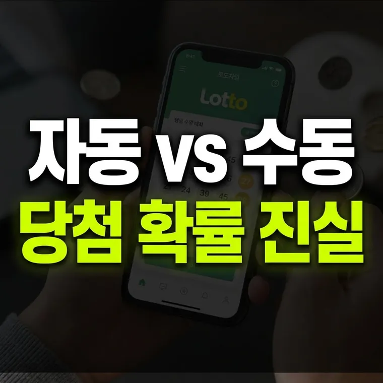

자동선택 vs 반자동 vs 수동선택: 당첨 확률은 정말 다를까?
자동·반자동·수동 중 어떤 방식으로 사도 1등 당첨 확률은 8,145,060분의 1로 같습니다. 자동 당첨자가 많은 것은 확률이 높아서가 아니라 자동으로 사는 사람이 훨씬 많기 때문입니다.

로또 구매 방식에 따른 오랜 오해와 궁금증
로또를 구매할 때 판매점에서 '자동'을 선택할지, 아니면 일일이 정성스럽게 마킹하여 '수동'이나 '반자동'을 선택할지 고민해 본 적이 있으실 겁니다.
실제로 로또 당첨 결과가 발표된 후 당첨자 현황을 살펴보면 "자동 O명, 수동 O명, 반자동 O명"과 같이 분류되어 표시됩니다. 매주 결과를 보면 대체로 '자동' 방식에서 가장 많은 1등 당첨자가 나오는 편입니다. 이를 보고 "자동으로 사야 당첨 확률이 더 높은가 보다"라고 생각하거나, 반대로 "원하는 번호를 조합할 수 있는 수동이나 반자동이 더 유리하지 않을까?" 하는 의문을 갖는 분들이 많습니다.
이번 글에서는 자동, 반자동, 수동선택이라는 구매 방식의 차이가 실제로 수학적 당첨 확률에 어떤 영향을 미치는지 분석하고, 각 방식의 특징과 올바른 접근법을 알아보겠습니다.
세 가지 구매 방식의 특징과 작동 개념
구매 방식을 정확히 비교하기 위해 각 방식의 정의와 특징을 먼저 살펴보겠습니다.
- 자동선택: 판매점의 단말기나 온라인 시스템이 1부터 45까지의 숫자 중 6개를 임의로 무작위 추출하여 발급하는 방식입니다. 구매자의 주관이나 선호도가 전혀 개입되지 않습니다.
- 수동선택: 구매자가 마킹지나 웹 화면을 통해 6개의 숫자를 직접 지정하여 선택하는 방식입니다. 본인의 생일, 좋아하는 숫자, 혹은 나름의 규칙을 적용할 수 있습니다.
- 반자동선택: 1개에서 5개까지 원하는 특정 번호만 직접 선택하고, 나머지 부족한 번호는 단말기의 무작위 추출에 맡기는 혼합형 방식입니다.
당첨 확률의 진실: 구매 방식과 확률의 상관관계
결론부터 말씀드리면, 자동, 반자동, 수동 중 어떤 방식을 선택하더라도 1등 당첨 확률은 8,145,060분의 1로 동일합니다.
그렇다면 왜 매주 발표되는 당첨자 통계에서는 '자동' 당첨자가 더 많이 나올까요? 그 이유는 '확률의 차이'가 아니라 '전체 구매량(모수)의 차이' 때문입니다.
- 구매 비율의 차이: 전체 로또 구매량 중 절대다수가 '자동' 방식으로 판매됩니다. 판매량의 대부분을 자동이 차지하고 있기 때문에, 1등 당첨자 중 자동 선택자의 비율이 가장 높게 나타나는 것은 자연스러운 결과입니다.
- 수동과 반자동의 비율: 수동은 자동보다 훨씬 적고, 반자동은 그보다도 적습니다. 반자동 당첨자가 매주 적게 나오거나 나오지 않는 이유는 반자동 구매자 수 자체가 적기 때문입니다.
- 수학적 독립성: 당첨 번호 추첨기는 어떤 번호가 자동으로 발급되었는지, 수동으로 마킹되었는지 알지 못합니다. 모든 6개 번호 조합의 당첨 확률은 같습니다.
실전 구매 방식별 장단점 및 주의할 점
당첨 확률은 같지만, 구매 방식에 따라 실제 이용에서 발생하는 장단점과 주의사항이 다릅니다.
자동선택의 장단점
- 장점: 번호 고민에 드는 시간과 스트레스를 줄여 주며, 번호 편향 없이 무작위 조합을 얻을 수 있습니다.
- 단점: 동일한 회차에 여러 장을 살 경우 비슷하거나 의도치 않은 연속 번호 조합이 나올 수 있습니다.
수동선택의 장단점
- 장점: 본인이 의미 있게 생각하는 번호를 직접 선택하는 재미를 줍니다.
- 단점: 7, 14, 21, 28처럼 눈에 띄는 패턴이나 생일(1~31 위주) 등 사람들이 많이 선택하는 번호 조합을 쓰기 쉽습니다. 만약 해당 번호가 당첨되면 같은 번호를 고른 당첨자가 많아 1인당 당첨금이 줄어들 수 있습니다.
반자동선택의 장단점
- 장점: 마음에 드는 번호 1~2개만 정하고 나머지는 무작위로 채울 수 있어 유연한 구매가 가능합니다.
- 단점: 직접 고른 번호도 다른 번호와 똑같은 확률이라서, 고정수를 정했다고 해서 당첨 확률이 올라가는 것은 아닙니다.
어떤 방식이든 확률은 같으니, 번호를 고르는 재미와 편의 중 자신에게 맞는 방식을 소액으로 가볍게 즐기시면 됩니다.
· 자동, 반자동, 수동 구매 방식 간의 당첨 확률 차이는 없으며 모두 8,145,060분의 1로 동일합니다.
· 자동으로 당첨자가 많이 나오는 이유는 성능이 좋아서가 아니라, 전체 구매자의 절대다수가 자동을 선택하기 때문입니다.
· 수동 선택 시 특정 번호 패턴(생일, 연속 숫자)에 몰리면 당첨 시 당첨금을 나눠 받을 가능성이 커질 수 있습니다.
이 글의 기준과 예시는 2026년 10월 기준입니다. 법령이나 제도가 바뀌면 내용이 달라질 수 있으니, 신청·신고·계약 전에는 해당 기관에서 최신 기준을 확인하세요. 계산 결과와 설명은 참고용입니다.
🔮 다음 글 예고
다음 글에서는 로또 번호 생성기 프로그램이 번호를 뽑는 원리와 난수 생성 알고리즘을 다룹니다.